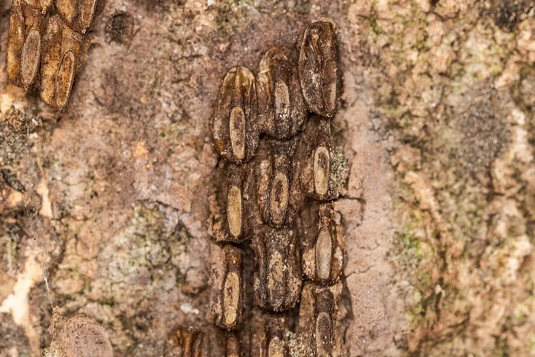

Field guide
How to Find and Destroy Spotted Lanternfly Egg Masses
Every egg mass you destroy this fall and winter is 30 to 50 fewer spotted lanternflies next spring.
When to look
Adult spotted lanternflies lay eggs from late summer through early winter, and the eggs survive the cold until they hatch in late spring. That makes fall and winter the best time to find and destroy them, before a single nymph emerges.
What they look like
A fresh egg mass looks like a smear of gray mud or putty, roughly an inch or two long. Each one holds about 30 to 50 eggs. As it ages, the covering cracks and wears away, and you can see rows of small, seed-like eggs underneath.

Where to look
- Tree trunks and branches, especially tree-of-heaven, maples, and other trees where you saw adults this summer
- Stone walls, rocks, fences, and the undersides of railings
- Outdoor furniture, grills, firewood, and stored equipment
- Cars, trailers, and anything that's been parked outside. Egg masses on vehicles are how lanternflies hitch rides to new areas.
How to destroy them
- Scrape. Use a plastic card or putty knife to scrape the egg mass off the surface.
- Catch it in alcohol. Scrape directly into a zip-top bag or container with rubbing alcohol or hand sanitizer. Scraping alone may not kill every egg, so don't just knock them onto the ground.
- Seal and toss. Close the bag or container and throw it away.
Can't reach it? Smashing an egg mass firmly also destroys the eggs.
Log your removals
Lantern Hunt is a free iPhone app built by a group of Yale students that turns removal into a game. Snap a photo of each egg mass before and after you scrape it, earn points, climb the leaderboard, and see removals add up on a shared community map.
Get Lantern Hunt on the App Store
Report and stay current
Many states ask residents to report spotted lanternfly sightings and egg masses, and some have quarantine rules for moving vehicles and materials. Guidance changes, so check with your state agriculture department or extension service for the latest instructions where you live. Lantern Hunt is an independent project and is not affiliated with any government agency.